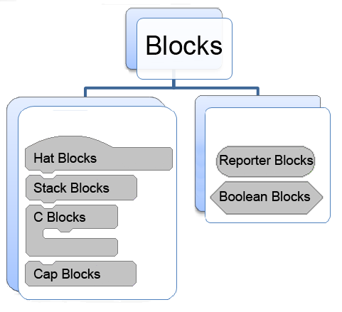
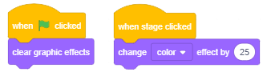
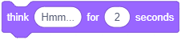
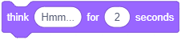

Hapat e sekuencave¶

Në mësimin e mëparshëm mësuam rreth komandave të lëvizjes dhe tani do të shohim se si mund t’i përdorim komandat nga grupi Looks dhe Events. Ne do të tregojmë se si i caktojmë një sjellje të veçantë burimit tonë, duke lidhur blloqe për të formuar një skenar. Projektet në këtë mësim përbëhen nga shkrime të bëra nga një seri hapash të njëpasnjëshëm. Mund të themi se ky lloj i shkrimeve ka një strukturë të thjeshtë lineare.
Terminologjia dhe gramatika vizuale e gjuhës gërvishtëse
Sprites mund të ekzekutojnë më shumë se 100 komanda. Blloqet që korrespondojnë me komandat paraqesin fjalorin e gjuhës Scratch, dhe rregullat me të cilat ato lidhen korrespondojnë me gramatikën e saj. Blloqet mbahen në Paleta Blocks, dhe ato ndahen në 10 ngjyra të ndryshme:
|
|
|
|
|
 Motion,
Motion, Sensing,
Sensing, My Blocks
My Blocks Extensions.
Extensions.Blloqet grupohen së bashku për të bërë më të lehtë për përdoruesit të krijojnë skriptet. Pavarësisht se sa e ndërlikuar është sjellja e një sprite të caktuar, skenari që përshkruan se është i përbërë nga një seri operacionesh të thjeshta të përfshira në këto 10 lloje. Nëse e dini se cili lloj aktiviteti duhet të kryejë sprite, lehtë mund të zgjidhni grupin e duhur dhe të merrni prej tij bllokun përkatës.
Ka blloqe të pavarura dhe funksionale.
Blloqet e pavarura korrespondojnë me komandat gjuhësore, d.m.th., ato korrespondojnë me hapat e algoritmit. Disa prej tyre kanë fusha të dhëna ku përdoruesi mund të vendosë një vlerë specifike.
Funksioni bllokon vlerat e kthimit. Ata nuk mund të qëndrojnë në mënyrë të pavarur në një skenar, ato duhet të futen në fusha bllok që marrin vlera dhe specifikojnë veprimet e tyre.
Blloqet janë formuar në mënyrë që të lidhen vetëm ato që formojnë një ndërtim të saktë gjuhësor, domethënë, Scratch ka një gramatikë vizuale e cila nuk lejon të bëjmë gabime sintaksore.
Blloqet e Pavarur
{kind=link}
Në tekst, ne do t’i referohemi blloqeve që korrespondojnë me hapat e përpunimit si blloqe rafte. Blockdo bllok rafte korrespondon me një aktivitet, domethënë, përgjigjet në pyetjen WHFAR should duhet të bëhet. Për shembull,  bllokon komandat e sprite për të lëvizur një numër të caktuar hapash në drejtimin e tij aktual. Forma e këtij blloku duket si një tullë Lego, dhe e gjithë skenari duket si një pirg tullash.
bllokon komandat e sprite për të lëvizur një numër të caktuar hapash në drejtimin e tij aktual. Forma e këtij blloku duket si një tullë Lego, dhe e gjithë skenari duket si një pirg tullash.
Numri i caktuar i hapave futet në rrethin e bardhë - fusha hyrëse e bllokut.
Në bllokun  një fushë hyrëse ka një formë të ngjashme me një drejtkëndësh të rrumbullakosur, dhe tjetra ka një formë të një rrethi. Fushat e hyrjes drejtkëndësh të rrumbullakosur mund të marrin si vlera teksti ashtu edhe numri, ndërsa ato rrethore mund të marrin vetëm vlera të numrave.
një fushë hyrëse ka një formë të ngjashme me një drejtkëndësh të rrumbullakosur, dhe tjetra ka një formë të një rrethi. Fushat e hyrjes drejtkëndësh të rrumbullakosur mund të marrin si vlera teksti ashtu edhe numri, ndërsa ato rrethore mund të marrin vetëm vlera të numrave.
Blloku ka tre fusha hyrëse.
Disa prej blloqeve kanë fusha hyrjeje gjashtëkëndëshe, për shembull bllok kontrolli  . Këto fusha hyrëse mund të marrin vetëm vlera logjike (të vërteta ose false).
. Këto fusha hyrëse mund të marrin vetëm vlera logjike (të vërteta ose false).
Në grupin e Kontrollit të blloqeve ka blloqe në formë C të quajtur С-blocks. Pika brenda C-bllok është një lloj specifik i një fushe hyrëse ku mund të futni të gjithë skenarin. Blloku  dy fusha hyrëse: një për numrin dhe një për skenarin.
dy fusha hyrëse: një për numrin dhe një për skenarin.
Është gjithashtu një bllok kontrolli i cili është në formë E dhe ka tre fusha hyrëse, një për kushtin (vlera logjike) dhe dy për skriptet. Fusha e parë e hyrjes për skriptet jep urdhrin për atë që duhet të bëhet nëse kushti është përmbushur, dhe tjetra çfarë duhet të bëhet nëse nuk ka.
Blloqet e kapelave korrespondojnë me hapin fillestar të algoritmit. Ata i përgjigjen pyetjes KU do të kandidojë skenari. Këto blloqe kanë maja të rrumbullakosura, ato vendosen në majën e pirgut, dhe ato lidhen me bllokun më poshtë përmes një gungë në fund. Blloqet e kapelave përcaktojnë atë që duhet të bëhet në mënyrë që pirg nën të të fillojë të funksionojë. Për shembull, mund të klikoni në flamurin e gjelbër ose të shtypni një çelës specifik në tastierë.
Blloqet e kapakëve korrespondojnë me hapin përfundimtar të algoritmit. Ata kanë një nivel në majë, por ata nuk kanë një gungë në fund. Meqenëse mund të ketë më shumë se një skenar të lidhur me një objekt të vetëm në Scratch, një bllok kapak mund të ndalojë ekzekutimin e të gjitha skripteteve të aktivizuara.
Blloqet e funksionit
Blloqet e funksioneve mbajnë informacione për blloqe të tjera. Ata shpesh quhen reporterë sepse raportojnë vlerën aktuale të një ndryshoreje. Në kapitullin e mëparshëm kemi prezantuar blloqet e reporterit që mbajnë koordinatat aktuale dhe drejtimin e rrjedhës. Disa blloqe reporterësh gjithashtu kanë fusha hyrje drejtkëndëshe rrethore dhe të rrumbullakosura, për shembull  dhe
dhe  .
.
Blloqet e leshit mbajnë vlerat logjike (të vërteta ose false). Ata kanë një formë gjashtëkëndore dhe ato mund të vendosen vetëm në fushat hyrëse të formës përkatëse (gjashtëkëndor ose drejtkëndor). Si për shembull, blloku  . Në Scratch, kushtet komplekse logjike lehtë mund të ndërtohen duke futur blloqe boolean në fushat hyrëse të blloqeve të tjerë boolean.
. Në Scratch, kushtet komplekse logjike lehtë mund të ndërtohen duke futur blloqe boolean në fushat hyrëse të blloqeve të tjerë boolean.
Funksionet e blloqeve Looks dhe Events
Blloqet Motion që shtjelluam në mësimin e mëparshëm mund të përdoren vetëm për sprites. Për dallim prej tyre, ju mund të përdorni blloqet nga grupi Looks për të menaxhuar pamjen e sprite dhe sfond, d.m.th pamjen e skenës. Sidoqoftë, kjo nuk vlen kjo për të gjitha blloqet e këtij grupi. Midis tyre ka nga ato që vlejnë vetëm për sprites, dhe ato që vlejnë vetëm për skenën. Blloqet nga grupi Events inicojnë ekzekutimin e shkrimeve.
Në mësimet e mëparshme ne mësojmë tashmë në lidhje me efektet e disa prej blloqeve Looks dhe Events, për shembull, say dhe shtypni një çelës. Në këtë mësim, ne do të prezantojmë, në mënyrë më të detajuar, blloqet që lejojnë animim të lehtë me aplikimin e efekteve grafike të integruara, dhe zgjerimin e fjalorit Scratch duke përdorur komanda të reja.
 Studioni shembujt e mëposhtëm¶
Studioni shembujt e mëposhtëm¶
Ne mund të argëtojmë miqtë tanë duke i treguar shaka, dhe gjithashtu duke u treguar atyre mashtrime matematikore. Projekti i mëposhtëm ilustron njërën prej tyre. Ka vetëm një skenar me një strukturë të thjeshtë lineare.
Shembulli 1 - Projekti “Mashtrim matematikor”¶
Hapi 1: Mendoni për një numër të vetëm tre shifror ku të gjithë shifrat janë të njëjta, p.sh. 111, 222.
Hapi 2: Shtoni ato shifra së bashku.
Hapi 3: Ndani formularin e numrit tre shifror Hapi 1 me shumën e marrë në Hapi 2.
Hapi 4: Rezultati është 37.
Skenari i këtij projekti është mjaft i thjeshtë. Sprite përdor “say_sec” bllok për t’i dhënë përdoruesit tre kërkesat e para, dhe “say” bllok për të komunikuar rezultatin.
Ne do të përdorim burimin e një vajze të quajtur Avery nga biblioteka e sprite, kjo sprite ka dy kostume (kliko në butonin Costums për t’i parë ato) dhe pas secilës kërkesë do të japim një komandë për ndryshimin e kostumit duke përdorur bllokun|next_costume|.
Për shkak se përdoruesit i duhet kohë për të llogaritur atë që kërkohet prej tij / saj, në dy blloqet e para do të vendosim që sprite duhet ta thotë tekstin e dhënë për 3 sekonda, dhe në të tretën do të vendosim 5 sekonda. Blloku  lë tekstin e fundit në ekran derisa të ndalojmë ekzekutimin e programit duke klikuar në shenjën * top* - tetëkëndëshin e kuq sipër qoshes së sipërme të djathtë të skenës.
lë tekstin e fundit në ekran derisa të ndalojmë ekzekutimin e programit duke klikuar në shenjën * top* - tetëkëndëshin e kuq sipër qoshes së sipërme të djathtë të skenës.
Skenari i këtij projekti është paraqitur në figurën vijuese.

Shembulli 2 - Projekti “Biseda”¶
Ky projekt paraqet një azhurnim të projektit “Math”. Në të, vajza Avery dhe djali Devin paraqesin të njëjtin mashtrim matematikor përmes një bisede në të cilën Devin mendon për një numër 222 dhe kryen llogaritjet e kërkuara, dhe në fund ai pyet “Si e dinit?”. Sjellja e të dy spritave përcaktohet nga skriptet, të cilat kanë një strukturë të thjeshtë lineare. Për ta bërë të duket sikur po flasin vërtet, skripti i vajzës duhet të përfshijë blloqe për pritje ndërsa djali mendon, dhe skenari i djalit duhet të përfshijë blloqe për pritje ndërsa vajzat shtrojnë pyetjet.
Skenari i këtij projekti është paraqitur në figurën vijuese.

Krijimi i projektit
 Hapni projektin Mathematician.
Hapni projektin Mathematician.
 Ruani këtë projekt nën emrin e ri Conversation.
Ruani këtë projekt nën emrin e ri Conversation.
Këshilla. Kur jeni duke krijuar një version të ri të një projekti ekzistues, ruajeni atë nën një emër të ri që në fillim. Në këtë mënyrë nuk do ta humbni versionin e vjetër.
 Nga libraria e sprite zgjidhni burimin e një djali të quajtur Devin.
Nga libraria e sprite zgjidhni burimin e një djali të quajtur Devin.
 Vendoseni djalin të sprite pranë buzës së djathtë të skenës dhe ndryshoni drejtimin e tij në dritaren e informacionit të sprite në -90, në mënyrë që ai të përballet me vajzën e sprite.
Vendoseni djalin të sprite pranë buzës së djathtë të skenës dhe ndryshoni drejtimin e tij në dritaren e informacionit të sprite në -90, në mënyrë që ai të përballet me vajzën e sprite.
 Shtoni shkrimet e mëposhtme te sprites.
Shtoni shkrimet e mëposhtme te sprites.

Në projektin Mathematician, vajza thotë 4 fjali, dhe ajo ndryshon veshjen e saj 3 herë (ajo ka 2 kostume). Kjo do të thotë që nëse e drejtojmë projektin dy herë radhazi, vajza nuk do të shfaqet e veshur me të njëjtën kostum në fillim të të dyja vrapimeve. Për shkak se ne dëshirojmë që vajza të shfaqet në fillim duke veshur të njëjtën veshje të dyja kohët, ne shtojmë komandën e duhur në krye të skenarit.
Këshilla. Vendosni komanda në fillim të projektit që inicializojnë sprites (specifikoni se ku dhe në cilën kostum duhet të shfaqen), veçanërisht nëse sprites po lëvizin gjatë ekzekutimit të projektit.
Ne koordinuam sjelljen e sprites duke futur komanda për pritje në skriptet e tyre.

 Ruani versionin e ndryshuar të projektit.
Ruani versionin e ndryshuar të projektit.
Nëse doni të dini përgjigjen e pyetjes së djalit “Si e dini?”, Klikoni në ikonën Show the Instruction.
Instruksion:
Vajza i kërkoi që të mendojë për një numër tre shifror me të njëjtat shifra. Le ta quajmë këtë shifër të përsëritur x. Në këtë rast, numri i panjohur mund të paraqitet si 111х, dhe shuma e shifrave të tij si 3х. Rezultati i funksionimit të ndarjes së numrit me shumën e shifrave të tij është 111/3 = 37, pavarësisht nga numri fillestar.
Grupi Operatorët përmban blloqe që mundësojnë kryerjen e operacioneve aritmetike. Për shembull, bllok mundëson shtesë. Nëse vendosni numrat në fushat hyrëse të këtij blloku, ajo do të llogarisë shumën e tyre. Operatorët nuk mund të qëndrojnë vetëm në skenar, ata duhet të futen në fushën e hyrjes së një blloku të pavarur. Për shembull, nëse i futni ato në fushën hyrëse të bllokut say ose think, vlera që llogaritin do të shfaqet.
Shembulli 3 - Projekti “Calculation”¶
Projekti i mëposhtëm është gjithashtu një azhurnim i projektit të mëparshëm. Në të, në vend të numrit fiks 222, djali zgjedh një numër tjetër tre-shifror me të tre shifrat e barabarta, dhe e përdor atë për të kryer operacionet e kërkuara. Kjo mund të jetë programe falë mundësisë së gjenerimit të një numri të rastit nga intervali i dhënë.
Gjenerimi i numrave të rastit
Në mesin e Operatorëve bllokon është një komandë  Të gjenerosh një numër të rastësishëm do të thotë të zgjedhësh rastësisht një numër nga një interval. Numri më i ulët dhe më i lartë i këtij intervali futen në fushat hyrëse të këtij blloku reporterësh. Pra, nëse ato numra ishin 1 dhe 10, do të zgjidhej ndonjë numër nga intervali [1,10], dhe, për shembull, nëse do të ishte -100 dhe 100, atëherë do të gjenerohej një numër nga intervali [-100,100] .
Të gjenerosh një numër të rastësishëm do të thotë të zgjedhësh rastësisht një numër nga një interval. Numri më i ulët dhe më i lartë i këtij intervali futen në fushat hyrëse të këtij blloku reporterësh. Pra, nëse ato numra ishin 1 dhe 10, do të zgjidhej ndonjë numër nga intervali [1,10], dhe, për shembull, nëse do të ishte -100 dhe 100, atëherë do të gjenerohej një numër nga intervali [-100,100] .
Në shembullin tonë, në fushën e parë duhet të futni numrin 1, dhe në numrin e dytë 9.
Në këtë projekt kemi përdorur variabël të cilat do të prezantohen në mësimin e tetë. Kjo është arsyeja pse është shënuar si e vështirë. Mund ta kaloni dhe t’i riktheheni më vonë.
Nëse nga ana tjetër ju pëlqen një sfidë, le të themi diçka për këtë temë paraprakisht. Kur themi i ndryshueshëm nënkuptojmë fushën e kujtesës kompjuterike ku programi ruan vlerat aktuale të të dhënave me të cilat është duke punuar. Kjo zonë quhet Emri i variblit, dhe vlera e variablit është ajo që është e ruajtur në të.
Krijimi i Projektit

Hapni projektin Conversation dhe ruajeni atë nën një emër të ri Llogaritja.
Krijoni variablin x që korrespondon me shifrat e një numri tre shifror dhe vendosni një numër të rastësishëm nga intervali [1,9] si vlera fillestare e tij.
Krijoni ndryshoren number, dhe si vlerë fillestare vendosni vlerën e shprehjes 111 * x.
Në bllokun e parë think të skenarit të djalit futni bllokun e reportazhit të variablës number në vend të numrit 222.


Krijoni variablin sum dhe pasi vlera fillestare vendosni vlerën e shprehjes x + x + x. Meqenëse blloku për shtesë ka vetëm dy fusha hyrëse, ne do të futim një bllok për shtesë në fushën hyrëse të një blloku tjetër shtesë. (Sigurisht, ne mund të kishim bërë të njëjtën gjë duke përdorur një bllok shumëzimi, sepse х + х + х = 3 * х)

Në bllokun e dytë think të skenarit të djalit futni raportuesin e ndryshores sum në vend të tekstit 2 + 2 + 2.
 Krijoni variablin result dhe si vlerë fillestare vendosni vlerën e numrit / shumës së shprehjes.
Krijoni variablin result dhe si vlerë fillestare vendosni vlerën e numrit / shumës së shprehjes.
 Në bllokun e tretë të skenarit të djalit futni reporterin e variablit result në vend të numrit 37.
Në bllokun e tretë të skenarit të djalit futni reporterin e variablit result në vend të numrit 37.
 Drejtoni projektin disa herë për të parë nëse gjeneron numra të ndryshëm tre-shifrorë.
Drejtoni projektin disa herë për të parë nëse gjeneron numra të ndryshëm tre-shifrorë.
 Ruani versionin e ndryshuar të projektit.
Ruani versionin e ndryshuar të projektit.
Shembulli 4 - Projekti “Efektet Sprite”¶
Projekti i mëposhtëm tregon se si  komanda nga grupi Looks mund të ndikojë në pamjen e sprite. Gjithashtu tregon bllokun e ngjarjes kur klikohet kjo sprite mund të fillojë ekzekutimin e skenarit.
komanda nga grupi Looks mund të ndikojë në pamjen e sprite. Gjithashtu tregon bllokun e ngjarjes kur klikohet kjo sprite mund të fillojë ekzekutimin e skenarit.
Skenari i projektit
Janë 7 kopje të së njëjtës sprite në skenë. Duke klikuar në njërën prej tyre ndryshon sprite duke përdorur një nga shtatë efektet grafike. Kjo mundësohet nga komanda . Sprite thotë gjithashtu se cili efekt është përdorur.

Creation of the Project
Nis njö projekt tö ri.
Fshini sprite mace dhe zgjidhni Sprint Singer1 nga biblioteka e sprite.
Shtoni skriptin e mëposhtëm në sprite.

Klikoni me të djathtën mbi listën e sprite në listën e sprite për të hapur menunë e shkurtoreve dhe zgjidhni opsionin cpoy. Sprite Singer2 do të shfaqet në listën e spriteve dhe do të ketë të njëjtin skenar si sprite e përdorur për krijimin e tij.
5| Ndryshoni efektin në bllokun
Bëni të njëjtën gjë 5 herë më shumë, por çdo herë zgjidhni një efekt tjetër nga lista drop-down dhe ndryshoni mesazhin që sprite thotë kur klikoni mbi të.
Organizoni sprites në skenë në mënyrë të barabartë dhe provoni nëse projekti po bën atë që ishte menduar, duke klikuar në secilën sprite.
Sa herë që klikoni në një nga sprites, do të shfaqet efekti i duhur.
Prandaj, në skenë duhet të shtohet një skenar i cili, kur klikohet në flamurin e gjelbër, do të zhbëjë ndryshimet duke përdorur bllokun  .
.
Figura e mëposhtme tregon pamjen e sprites pas një ose më shumë aplikimeve të efektit përkatës.

Example 5 - Project “Stage Effects”¶
Për dallim nga blloqet Motion, blloqet Looks gjithashtu mund të aplikohen në skenë. Të gjitha skriptet në këtë projekt do të shtohen në skenë. Qëllimi i këtij projekti është të tregojë se si ndryshimi_efekti | komanda ndikon në pamjen e skenës dhe për t’ju dhënë ide se si mund ta përdorni atë në projektet tuaja të ardhshme. Për të vendosur gjithçka në normale, ne do të shtojmë bllokun për pastrimin e të gjitha efekteve grafike në * kur të klikohet flamuri jeshil * bllok i ngjarjes.
Skenari i projektit
Macja është në mes të shkretëtirës. Përdoruesi mund të ndryshojë pamjen e sfondit duke shtypur butonat me numrat nga 1 në 3 në të. Secila prej këtyre ngjarjeve korrespondon me një nga efektet grafike në sfond. Figura e mëposhtme tregon se si duket faza në fillim (0) dhe pasi çelësat u shtypën disa herë: 1 - efekti color, 2 - efekti fisheye, 3 - efekti rotation dhe 4 - efekti pixelate.

 E kuptuat?¶
E kuptuat?¶
Pyetja 1¶
Q-66: Cilat nga blloqet i përkasin grupit të komandave Looks? (Zgjidhni të gjitha përgjigjet e sakta)

Pyetja 2¶
Q-67: Cilin nga blloqet i përkasin grupit Events të komandave? (Zgjidhni të gjitha përgjigjet e sakta)

Pyetja 3¶
Q-68: Cilin nga blloqet i përkasin grupit Control të komandave? (Zgjidhni të gjitha përgjigjet e sakta)

Pyetja 4¶
- po
- jo
- Saktë.
Q-69: A mundet që një skenar të ketë blloqe kapele të shumta?
Pyetja 5¶
- reporter blocks
- stack blocks
- Saktë.
- hat blocks
- cap blocks
Q-70: Si i quajmë blloqet të cilat kanë një shkallë në krye dhe një gungë në fund?
Pyetja 6¶
- reporter blocks
- Saktë.
- stack blocks
- hat blocks
- C-blocks
Q-71: Si i quajmë blloqet që mbajnë vlerat dhe nuk mund të qëndrojnë në mënyrë të pavarur në një skenar, por ato duhet të futen në fushat hyrëse të blloqeve të tjerë?
Pyetja 7¶
-
Q-72: Duke tërhequr drejtkëndësat, çiftoni blloqet me rolin e tyre në Scratch.
Provo përsëri
- hat
- define WHEN the script will run
- reporters
- hold values
- C-blocks
- receive the script as input
- stack blocks
- define WHAT should be done
Pyetja 8¶
- po
- jo
- Saktë.
Q-73: A kanë të njëjtën vlerë shprehjet  dhe
dhe  ?
?
Pyetja 9¶
- asnjëra
- Gabim. E dyta ka vlerë 10/(-1)=-10
- e para
- Gabim. E para ka vlerë 5-3=2
- e dyta
- Saktë.
- të dyja
- Gabim. E para ka vlerë 2.
Q-74: Cila nga shprehejet  dhe
dhe  ka vlerë negative?
ka vlerë negative?
Pyetja 10¶
Cila ëeshtë vlera e shprehjes  ?
?
Pyetja 11¶
- 45
- Gabim. 5+(2*(7-4)) = 5+2*3 = 5+6 = 11
- 11
- Saktë.
- 15
- Gabim. 5+(2*(7-4)) = 5+2*3 = 5+6 = 11
Q-75: Cila është vlera e shprehjes  ?
?
Pyetja 12¶
- 3
- Gabim. ((2+1)*(9-5))/2 = 3*4/2 = 6
- 11
- Gabim. ((2+1)*(9-5))/2 = 3*4/2 = 6
- 6
- Saktë.
Q-76: Cila është vlera e shprehjes  ?
?
 Provoje!¶
Provoje!¶
Ushtrimi 1 - Zmadhimi¶
Krijoni një projekt në të cilin sprite do të rritet më e madhe dhe më e vogël në skenë. Çelësi up duhet ta bëjë atë më të madh, dhe shigjeta down duhet ta bëjë atë më të vogël. Bëni atë në mënyrë që kur të klikohet flamuri i gjelbër, sprite kthehet përsëri në madhësinë e saj normale.
Instruksion:
Shkrimet e mëposhtme duhet të shtohen në sprite:
Ushtrimi 2 - Kthimi¶
Në sprite-in e maceve shtoni edhe dy sprites të tjera nga libraria e sprite: vajza Avery dhe djali Devin. Vendoseni sprite në të majtë dhe djali spërkat djathtas në lidhje me macen. Krijoni një projekt i cili do të lejojë që macja e maces të kthehet majtas në drejtim të vajzës, dhe djathtas në drejtim të djalit. Kthimi në të majtë duhet të kontrollohet me butonin left arrow, dhe të kthehet në të djathtë me butonin right arrow. Sigurohuni që macja nuk është kokëposhtë kur kthehet në të majtë.
Instruksion:
Shkrimet e mëposhtme duhet të shtohen në spriten e maces: 
Ushtrimi 3 - Ndryshimi i ngjyrës së Backdrop¶
Krijoni një projekt i cili lejon që ngjyra e skenës të ndryshojë çdo herë që klikoni mbi të. Përdorni efektin color dhe sigurohuni që duke klikuar mbi flamurin e gjelbër heq efektet grafike.
Instruksion:
Skenarët e mëposhtëm duhet të shtohen në skenë: 
Ushtrimi 4 - Kodimi i shprehjeve aritmetike me parantezë (1)¶
Krijoni një shprehje aritmetike në Scratch e cila korrespondon me shprehjen e mëposhtme matematikore: (5 * (5 + 4)) - (2 * (2 + 3)). Duke futur bllokun e duhur të reporterit në fushën hyrëse të bllokut say, kontrolloni nëse po merrni vlerën e saktë: (5*(5+4))-(2*(2+3)) = 5*9-2*5 = 45-10 = 35
Përgjigja:

Ushtrimi 5 - Kodimi i shprehjeve aritmetike me parantezë (2)¶
Create an arithmetic expression in Scratch which corresponds to the following mathematical expression: (8/(4-2))*(8-(6/2)) By inserting the appropriate reporter block into the input field of the say block check that you are getting the correct value: (8/(4-2))*(8-(6/2)) = 8/2*(8-3) = 4*5 = 20.
Përgjigja:

 Debug!¶
Debug!¶
Gabimi 1¶
- Question
Kodimi i shprehjeve aritmetike me parantezë

Përgjigja:
Koha nuk është caktuar si duhet. Komandat wait dhe `` say`` duhet të kenë të njëjtën sasi sekondash në fushat hyrëse për bisedën të sinkronizohet siç duhet.
Gabimi 2¶
- Question
Nxënësit i pëlqen të bëjë gjithçka sipas rregullave dhe për këtë arsye dëshiron të shtojë komandën stop në secilin program. Kështu që ai / ajo shtoi
 bllok deri në fund të skenarit në projektin Matematikan. Sidoqoftë, teksti i fundit blloku nuk ishte aspak i dukshëm. Si mund ta rregullojë nxënësin këtë problem, dhe akoma të ketë komandën stop në fund?
bllok deri në fund të skenarit në projektin Matematikan. Sidoqoftë, teksti i fundit blloku nuk ishte aspak i dukshëm. Si mund ta rregullojë nxënësin këtë problem, dhe akoma të ketë komandën stop në fund?
{kind=link}
Përgjigje:
Komanda say Rezultati është 37 ekzekutohet menjëherë dhe komanda stop all shkon menjëherë pas saj, kjo është arsyeja pse ne praktikisht nuk jemi në gjendje të shohim efektin e bllokut say. Prandaj, ky bllok duhet të zëvendësohet me bllokun say__for__seconds ku teksti, për shembull, duhet të jetë i dukshëm për 5 sekondë.
Gabimi 3¶
- Question
Nxënësi dëshiron që sprite të rrotullohet kur shtyp çelësin hapësinor. Por kjo nuk po ndodh. Ku është gabimi

Përgjigje:
Sprite po rrotullohet, por ndodh shumë shpejt, me shpejtësinë me të cilën kompjuteri ekzekuton komandat, kështu që syri i njeriut nuk është në gjendje të regjistrojë lëvizjen. Nëse dëshironi të shihni kur rrjedha e rrotullimit rrotullohet, duhet të vendosni një komandë pritjeje midis komandave kthehuni djathtas. Ne do të jemi në gjendje ta shohim sprite-in të kthehet.
 Përmbledhje¶
Përmbledhje¶
Në këtë mësim u njohëm me grupet dhe format e blloqeve nga paleta e bllokut, të cilat përdoren për të dhënë komanda të gjuhës programuese në Scratch. Fjalori vizual i Scratch përmban më shumë se 100 blloqe të ndarë në 10 grupe. Gramatika vizuale e Scratch realizohet përmes formës specifike që kanë blloqet, gjë që nuk i lejon ata të lidhen nëse funksionet e tyre nuk janë të pajtueshme. Blloqet e pavarura janë të lidhura në atë mënyrë që ato formojnë skriptet, të cilat përcaktojnë sjelljen e objekteve përkatëse, dhe blloqet e funksioneve vendosin vlerat e kërkuara.
Projekte Scratch: 3Studio
Koncepte të reja: events, actions, arithmetic operators, random numbers, linear structure of the script.
Komanda Scratch:  -
-  ,
,  ;
;  -
-  , ;
, ;
 - ,
- ,  , , ,
, , ,  ,
,  ;
;
 - ,
- ,  , ,
, ,  , ; -
, ; - 
 .
.
Shënim. Blloqet e shënuara me do të diskutohen në mësimet që vijojnë.
 Krijoni projekte¶
Krijoni projekte¶
Projekti 1 - “Gjeni”¶
Krijoni këtë projekt bazuar në shembullin Matematikan.
Filloni një projekt të ri, të cilin do ta quani Genius. Zgjidhni formën kryesore të librarisë, dhe sfondin nga libraria e prapavijës. Sprite duhet të japë detyrat e mëposhtme.
“Mendoni për çdo numër tre shifror.”
“Rregulloni shifrat nga më i larti tek më i ulti - ky do të jetë numri i parë.”
“Rregulloni shifrat nga më të ultat në më të lartat - ky do të jetë numri i dytë”.
“Zbrit numrin e dytë nga numri i parë.”
“Mos harroni rezultatin, dhe sesa rrëzoni shifrat e tij.”
“Ky numër i ri shton rezultatin që ju kujtuat më parë.”
“Numri që keni është 1089.”
Projekti 2 - “Kek me çokollat딶
Filloni një projekt të ri, të cilin do ta quani Cake Chocolate. Kjo duhet të jetë një animacion ku një bukëpjekës shpjegon një recetë (algoritëm) për të bërë tortë me çokollatë.
Për këtë animacion do t’ju duhet sprites e mëposhtme: bukëpjekës, vezë, miell, sheqer, çokollatë, tas, mikser, një furrë, ëmbëlsira. Gjeni imazhet e duhura në kompjuterin tuaj ose në internet dhe përshtatini ato për t’iu përshtatur projektit tuaj (pastroni sfondin, bëni ato më të mëdha ose më të vogla …).
Siguroni sinkronizimin e shkrimeve duke shtuar komandën wait për të gjitha objektet dhe caktimin e kohës së duhur. Sprite e vetme që duhet të jetë në skenë gjatë gjithë kohës është sprite e bukës. Ai po lexon recetën (algoritmin) dhe përcakton se kur do të shfaqen ose do të zhduken spritet e tjera.
Bukëpjekësi është vetëm në skenë. Ai thotë: “Këtu është ALGORITMI për të bërë një tortë me çokollatë!” (2 sekonda)
Bukëpjekësi thotë si vijon: “Merrni vezët, miellin, sheqerin dhe çokollatën”. Në atë moment vezët, mielli, sheqeri dhe çokollata duhet të shfaqen në skenë. Kjo skenë duhet të zgjasë 2 sekonda.
Bukëpjekësi thotë si vijon: “Vendosni gjithçka në një tas dhe kombinoni me mikserin”. Në atë moment vezët, mielli, sheqeri dhe çokollata zhduken nga skena, dhe shfaqet tas dhe mikser. Kjo skenë duhet të zgjasë 2 sekonda.
Bukëpjekësi thotë si vijon: “Vendoseni tasin në furrën e ndezur”. Në atë moment tas dhe mikser zhduken nga skena, dhe furra shfaqet. Kjo skenë duhet të zgjasë 2 sekonda.
Bukëpjekësi thotë si vijon: “Piqeni tortën për 30 minuta”. Asgjë nuk ndryshon në skenë. Kjo skenë duhet të zgjasë 2 sekonda.
Bukëpjekësi thotë si vijon: “Shërbeni tortën”. Në atë moment furra zhduket nga skena, dhe shfaqet torta. Kjo skenë duhet të zgjasë 2 sekonda.